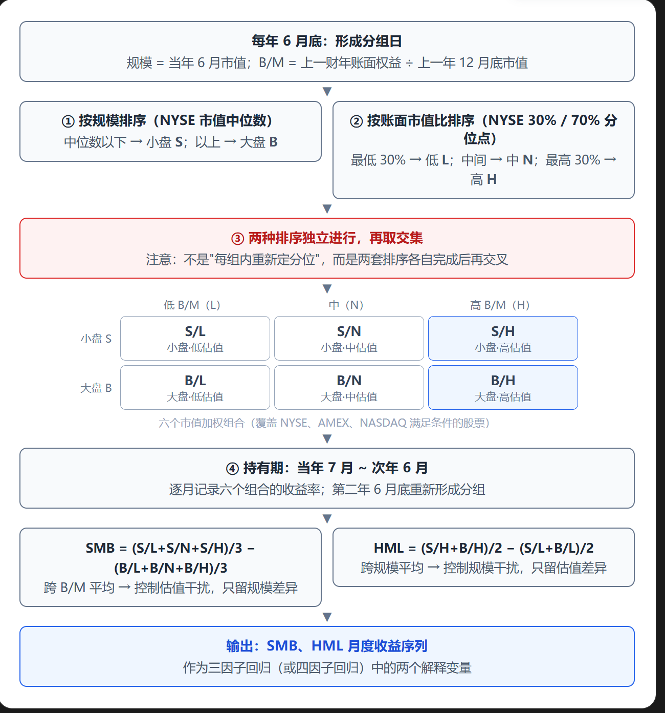
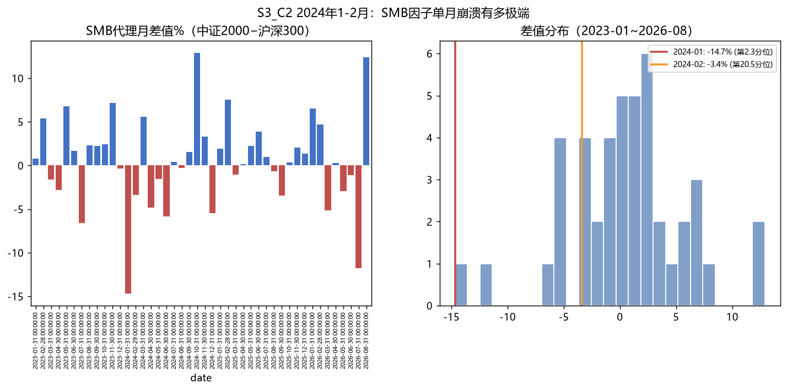
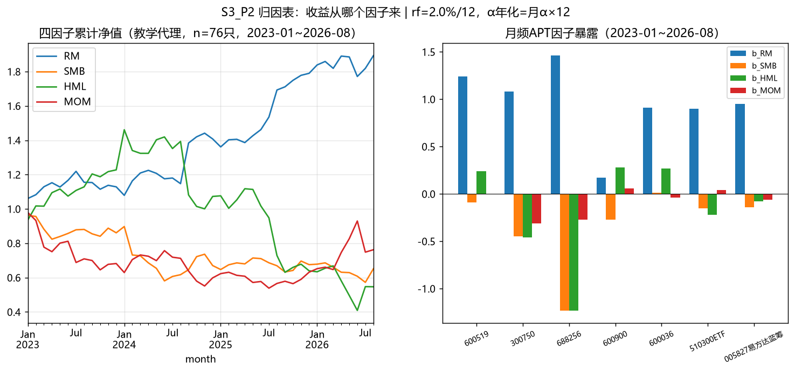

本课时结束后应能：
CAPM 用资产对市场组合的 β 描述其期望超额收益。β 衡量与市场共同波动的程度，却不直接指出收益差异可能关联的其他特征。实证研究记录过以下经验现象：
这些是相对于特定基准的经验规律，可能涉及风险、投资者行为或样本选择；不能仅凭其存在认定因果性的风险补偿。Ross（1976）的套利定价理论（APT）在因子结构与分散等条件下给出近似线性定价关系；本课使用的规模、价值、动量是后来的经验因子示例，不能说 Ross 已指定这些因子。纽约联储 APT 综述
第一步：收益的因子结构。 假设任何资产的收益由少数共同因子驱动：
第二步：无套利论证。 如果资产足够多、特质风险在分散组合中趋小，具有相同因子暴露的充分分散组合不应长期存在不同的期望收益；否则可构造接近无因子暴露的多空组合。由此得到近似线性定价关系。有限样本、无法完全对冲的特质风险和交易摩擦下，这不是现实中零风险、零成本的套利保证：纽约联储 APT 综述（PDF）
第三步：与 CAPM 的关系。 若在形式上令 K=1、因子取市场组合，且相应溢价等于市场超额期望收益，(2) 与 CAPM 的证券市场线（SML）同形：
这是定价公式在特定设定下同形，不等于 CAPM 的均值—方差均衡假设从 APT 的无套利假设中完整推出。两者比较：
| CAPM | APT | |
|---|---|---|
| 风险描述 | 一个数字 β | 一张暴露向量表 (b1,…,bK) |
| 市场组合 | 理论上需要市场组合；实证通常只能用指数代理，真正的总市场组合难以观测 | 不预先指定唯一市场组合；因子仍须有明确经济或统计定义，并检验定价能力 |
| 理论性质 | 精确的均衡定价 | 近似（近似套利），因子清单不唯一 |
第一步（时间序列回归，估暴露）：对每只资产跑
第二步（样本内归因）：用同一组月份对含截距的普通最小二乘回归取均值，可得到下式的算术分解恒等式。它成立于样本内，不能单凭此式证明风险溢价、因果归因或模型定价能力；若要检验 APT 的截面定价，需要另做跨资产检验。只有把因子定义为可交易组合的收益，并在额外条件下，样本均值才可作为其期望溢价的估计。这里的代理因子未扣交易成本，也未检验可交易性。
教材列举的因子示例分两类：宏观因子（GDP 意外、利率意外…）与交易组合类因子（规模、价值、动量…）。本课借鉴 Fama–French 三因子加动量的四因子框架，但以下序列均为本地教学代理，构造方法与标准因子不同，不能标作正式的 Fama–French／Carhart 因子。Kenneth French 标准因子定义
| 因子 | 含义 | 预期溢价方向的"教科书说法" |
|---|---|---|
| RM（教学代理） | 固定混合股票池等权收益 − 固定无风险利率；并非全市场组合 | 历史上常见正值，样本可变 |
| SMB（教学代理） | 固定中证2000样本股组 − 固定沪深300样本股组 | 不保证为正 |
| HML（教学代理） | 中证红利 − 创业板指；不是按账面市值比分组的标准 HML | 方向不确定 |
| MOM（教学代理） | 样本池第 t−12 至 t−3 月赢家 − 输家；标准口径通常取 t−12 至 t−2 月 | 方向不确定 |
注意：P1 中三个代理序列在这一样本期的实现样本均值为负，只能说明本口径、本窗口内的结果，不能据此证伪长期因子溢价，更不能推断下一季度方向。标准动量的 t−12 至 t−2 月口径见 Kenneth French 的构造说明。

| 用途 | 做法 | 对应内容 |
|---|---|---|
| 更自由地构建组合 | 风险 = 暴露向量 → 组合构建 = 选择暴露结构 | 教材第三节："组合策略=选择最佳的因子敏感系数组合"；见第五节 P3 |
| 定向配置风险 | 观点 → 目标暴露 → 按暴露选股，并加约束防集中 | 第五节 P3、P4 |
| 诊断基金收益 | 将截距与暴露分开；再检查基准、分红、投资范围与稳健性，避免把 α 直接等同个人能力 | 第四节 P2 |
三个案例分别观察风格集中后的回撤、小盘相对大盘的下跌、以及阶段性风格轮动。价格走势能说明风险表现；若要证明"拥挤"及其因果作用，还需持仓集中度、资金流或交易行为证据。
口径预告：本节及全课时实测数字统一为——前复权日线；因子与回归用月频；年化=月×12；rf=2.0%/年（固定值，声明）；样本窗与各图表的备注口径随文标注。
背景：2019–2021 年初，消费、医药等"核心资产"上涨明显，之后部分相关指数大幅回撤。该价格路径适合讨论风格集中风险；"公募整体拥挤持有导致回撤"属于需要基金持仓与资金流证据检验的机制假说。
| 对象 | 2019-01~2021-02-10 累计 | 2021-02-10~2022-04-26 最大回撤 | 2021-02-10 收盘持有至 2026-08-31 |
|---|---|---|---|
| 中证消费 000932 | +227.8% | −37.0% | −60.7% |
| 中证白酒 399997 | +388.2% | −38.1% | −69.5% |
| 中证医疗 399989 | +231.4% | −48.7% | −65.8% |
| 创业板指 399006 | +177.8% | −39.6% | +0.7% |
| 沪深300 000300 | +95.6% | −34.8% | −20.4% |
*来源：本地缓存的中证指数/腾讯行情；样本区间见表头；指数点位不涉及股票复权，计算为日频收盘点位累计变化。指数价格收益未加计分红。*
如何解读：在所选起点与终点，消费、白酒、医疗的累计收益明显低于沪深300；这说明只分散个股、却共同暴露于某类行业或风格时，组合仍可能承受较大共同回撤。指数不是"因子"本身，这张表也不能识别下跌究竟由拥挤、盈利预期变化还是估值变化主导。
背景：2024 年 1–2 月小市值股票相对大市值股票明显承压。证监会后来说明，部分 DMA 产品在市场波动中回撤，相关机构主动降杠杆、降规模；这支持把杠杆和流动性列入机制讨论，但不足以单独证明"雪球敲入→DMA→微盘下跌"的完整因果链。证监会 2024-02-28 答记者问
| 时点/窗口 | 中证2000 | 沪深300 | 差值（SMB 代理） |
|---|---|---|---|
| 2024-01 月度 | — | — | −14.68 个百分点（44 个月经验排序第 1／44） |
| 2024-02 月度 | — | — | −3.38 个百分点（44 个月经验排序第 9／44） |
| 危机窗 2024-01-02~2024-02-08 | −27.49% | −1.93% | −25.6 个百分点 |
| 急涨窗 2024-09-24~2024-10-08 | +36.11% | +32.47% | +3.6 个百分点 |
*来源：中证指数公司行情；月度=月末收盘对月末收盘；区间=首尾交易日收盘；前复权（指数）。*

一句结论：指数差口径的最差月是 2024-01，而本课固定样本股差口径的最差月是 2024-02（见 P1）。两者定义不同，不能互相验证；44 个月里出现极端负值也不足以证明统计意义上的"厚尾"。压力测试可同时使用真实事件窗、假设冲击和反向情景，并明确各自用途。中证2000编制方案
背景：所选 2025–2026 年窗口里，多个风格指数表现差异明显。第2课时讨论过 005827，这里换一个提问方式：区间收益是否变化？仅凭区间收益能否评价同一管理人的能力？
| 对象 | 2025-01~2025-06 | 2025-07~2026-08 | 全窗 2025-01~2026-08 |
|---|---|---|---|
| 中证2000（小市值代理） | +15.2% | +17.5% | +35.4% |
| 中证红利 | −3.1% | +5.7% | +2.5% |
| 科创50 | +1.5% | +67.9% | +70.3% |
| 沪深300 | 0.0% | +17.5% | +17.5% |
| 005827 易方达蓝筹 | +0.8% | −13.5% | −12.8% |
*来源：中证/上交所指数行情 + 天天基金单位净值；区间=首尾交易日；日频收益累计。005827 为单位净值变动，未核对分红再投后的总回报；与指数价格收益比较须先统一分红口径。*
本课代理因子也呈现窗口差异（P1）：第一窗 SMB +6.1%、MOM −3.5%；第二窗 SMB −8.3%、MOM +32.0%、HML −46.3%。005827 的单位净值第一窗 +0.8%、第二窗 −13.5%，但单凭两段净值不能判断经理能力；还需核对分红、基金持仓范围、经理任期、基准与风险暴露。
Khandani 与 Lo 对 2007 年 8 月美国量化基金波动进行研究：他们的模拟多空组合显示，基于相近估值特征的策略在 7 月已开始平仓；交易数据及模拟做市策略显示，8 月第一周流动性提供能力也受到冲击。作者提出共同去杠杆与做市资本暂时退出的解释。这里有"策略持仓/交易机制"层面的证据，比只看风格指数涨跌更接近"拥挤"机制，但模拟组合的收益仍不能写成某家基金真实亏损。Khandani 与 Lo，NBER 工作论文
Daniel 与 Moskowitz 研究发现，动量策略在市场大幅下跌后的反弹阶段可能出现显著负收益。论文举出的 2009 年 3–5 月例子里，过去输家组合涨约 163%，过去赢家组合涨约 8%；"买赢家、卖输家"的多空策略因此遭遇剧烈反转。这是论文所用美国市场、特定分组和窗口的结果，不能套到本课中国股票池的 MOM 代理上。Daniel 与 Moskowitz，《Momentum Crashes》
本地三例与文献两例共同说明：风格和规模暴露可能带来共同回撤，不同样本窗的实现收益也会变化。下一节用统一口径的经验因子模型描述暴露；模型提供描述与待检验假说，不自动识别价格变化的成因。
把 C1 / C2 / C3 的提示词交给你的 Agent 执行，至少完整跑通两个，并用独立来源或本地缓存核对结果；两种证据级别要分开写。每张表下注明数据来源、样本区间、频率、价格/总回报口径，以及 rf 是否参与。若选择 C1 的"拥挤"解释，额外找同一时期公开基金季报的重仓股重合度或持仓占比；找不到时只陈述指数共同回撤。任选一篇文献对照，写出它比本地指数表多提供了什么机制证据。
本节先构建四条教学代理收益序列。它们可作为后续样本内归因与选股练习的统一标尺，但由于股票池抽样、当期成分回看历史和交易成本缺失，不能直接当作全市场风险溢价或可投资策略业绩。
本地缓存复现结果（本课时教学代理口径，2023-01~2026-08，44 个月；独立行情真值与历史可交易性尚未逐项校验）：
| 因子 | 年化收益% | 年化波动% | 44个月累计% | 单月最差 |
|---|---|---|---|---|
| RM | +18.63 | 15.48 | +89.3 | 2026-06：−6.0% |
| SMB | −9.65 | 19.93 | −34.9 | 2024-02：−18.5% |
| HML_proxy（脚本列名 HML） | −10.66 | 34.18 | −45.3 | 2025-08：−23.2% |
| MOM | −3.97 | 26.05 | −23.8 | 2026-07：−19.5% |
相关系数矩阵（低相关有利于分散——各因子携带不同的信息）：
| RM | SMB | HML | MOM | |
|---|---|---|---|---|
| RM | 1.00 | 0.08 | −0.42 | −0.22 |
| SMB | 0.08 | 1.00 | −0.02 | −0.22 |
| HML | −0.42 | −0.02 | 1.00 | −0.43 |
| MOM | −0.22 | −0.22 | −0.43 | 1.00 |
分年度复合收益（本地代理序列正负变化；不代表总体溢价估计）：
| 年份 | RM | SMB | HML | MOM |
|---|---|---|---|---|
| 2023 | +12.9 | −13.9 | +22.8 | −31.8 |
| 2024 | +24.7 | −22.2 | −12.6 | −12.2 |
| 2025 | +27.2 | +0.8 | −40.4 | +5.5 |
| 2026（至8月） | +5.7 | −3.6 | −14.5 | +20.7 |
*来源：本地缓存的腾讯行情/中证指数数据与 lesson3.py；成分名单抓取时点未在缓存中完整保留，不能将其视为逐月历史成分；样本区间 2023-01~2026-08；月频；rf=2.0%/年固定；universe=76 只。表内"年化收益"是月收益算术均值×12，"44个月累计"是逐月复利，两者不可直接互换。*
HML_proxy。有了代理因子，就可以对有足够同频收益数据的资产做样本内统计归因：把月均超额收益分解为四个回归因子贡献与截距 α。它不直接等于经济因果解释。
现有脚本输出——归因表（α 为月截距×12，暴露系数后括号内为普通 OLS t 值；未用异方差/自相关稳健标准误）：
| 对象 | α年化% | α_t | R² | b_RM(t) | b_SMB(t) | b_HML(t) | b_MOM(t) |
|---|---|---|---|---|---|---|---|
| 贵州茅台 | −25.66 | −2.92 | 0.575 | 1.24 (6.3) | −0.09 (−0.7) | 0.24 (2.5) | −0.00 (−0.0) |
| 宁德时代 | −8.91 | −0.55 | 0.511 | 1.08 (3.0) | −0.45 (−2.0) | −0.46 (−2.6) | −0.31 (−1.4) |
| 寒武纪 | +87.80 | 1.54 | 0.263 | 1.46 (1.1) | −1.23 (−1.5) | −1.23 (−2.0) | −0.27 (−0.3) |
| 长江电力 | +9.41 | 1.49 | 0.453 | 0.17 (1.2) | −0.27 (−3.0) | 0.28 (4.0) | 0.06 (0.6) |
| 招商银行 | −4.49 | −0.34 | 0.280 | 0.91 (3.1) | 0.01 (0.1) | 0.27 (1.9) | −0.04 (−0.2) |
| 510300ETF | −13.34 | −2.91 | 0.851 | 0.90 (8.8) | −0.15 (−2.4) | −0.22 (−4.4) | 0.04 (0.6) |
| 005827 易方达蓝筹 | −29.79 | −3.95 | 0.622 | 0.95 (5.6) | −0.14 (−1.3) | −0.08 (−1.0) | −0.06 (−0.6) |
现有脚本输出——样本均值分解（算术年化%，因四舍五入，等式有时相差约 0.01 个百分点；这些数不是复合年收益）：
| 对象 | 年化超额 | = α | + RM贡献 | + SMB贡献 | + HML贡献 | + MOM贡献 |
|---|---|---|---|---|---|---|
| 贵州茅台 | −4.29 | −25.66 | +23.04 | +0.86 | −2.55 | +0.01 |
| 宁德时代 | +21.55 | −8.91 | +20.04 | +4.32 | +4.89 | +1.21 |
| 寒武纪 | +141.05 | +87.80 | +27.15 | +11.90 | +13.11 | +1.08 |
| 长江电力 | +12.11 | +9.41 | +3.24 | +2.62 | −2.94 | −0.22 |
| 招商银行 | +9.61 | −4.49 | +16.95 | −0.10 | −2.90 | +0.16 |
| 510300ETF | +7.08 | −13.34 | +16.74 | +1.48 | +2.35 | −0.15 |
| 005827 易方达蓝筹 | −9.63 | −29.79 | +17.69 | +1.33 | +0.89 | +0.25 |
代理因子样本均值（月均×12，%）：RM +18.63 / SMB −9.65 / HML_proxy −10.66 / MOM −3.97。这里的"均值"不能直接称为总体因子风险溢价。
*来源：本地缓存的腾讯行情/天天基金/中证指数数据；样本区间 2023-01~2026-08；月频；股票/ETF 前复权，基金使用单位净值且未核对分红再投；rf=2.0%/年固定；α 年化=月 α×12。t 值依据普通 OLS、约44个月和4个解释变量，仅作课堂初筛。*

假设某资产的月度回归估计为 α=0.5%、b_RM=1.2、b_SMB=−0.4，样本内两个因子的月均收益分别为 1.0% 与 −0.5%。那么样本内月均超额收益为 0.5% + 1.2×1.0% + (−0.4)×(−0.5%) = 1.9%，算术年化为 1.9%×12=22.8%。这里"SMB 贡献 +0.2 个百分点"只因为负暴露遇到负样本均值，不表示下一月一定赚 0.2%；22.8% 也不是逐月复利回报。
归因是事后的收益分解。本节示范如何把观点写成目标暴露，并用既定规则排序。由于名单是用截至 2026-08 的数据选出，后文 2024 年事件窗只是把事后名单放回历史的情景演示，不属于事前选股记录或无前视偏差的回测。
现有脚本输出（基于 2026-08 可得的股票池与历史数据）：
最终名单（行业约束版，每行业≤2只）与暴露：
| # | 代码 | 名称 | 行业 | b_RM | b_SMB | b_HML | b_MOM | score |
|---|---|---|---|---|---|---|---|---|
| 1 | 300394 | 天孚通信 | 通信设备 | 2.23 | 1.42 | −0.68 | 1.15 | 3.25 |
| 2 | 000657 | 中钨高新 | 小金属 | 1.11 | 1.00 | −0.46 | 1.29 | 2.74 |
| 3 | 600460 | 士兰微 | 半导体 | −0.99 | 1.13 | −1.37 | 0.17 | 2.67 |
| 4 | 600522 | 中天科技 | 通信设备 | −0.63 | 0.73 | −1.09 | 0.63 | 2.45 |
| 5 | 600183 | 生益科技 | 元器件 | 0.71 | 0.27 | −0.70 | 1.47 | 2.44 |
| 6 | 688521 | 芯原股份 | 半导体 | 0.74 | 0.53 | −1.00 | 0.86 | 2.40 |
| 7 | 300433 | 蓝思科技 | 元器件 | −0.35 | 0.56 | −1.12 | 0.63 | 2.31 |
| 8 | 600176 | 中国巨石 | 玻璃 | −0.22 | 0.06 | −1.03 | 1.19 | 2.29 |
| 9 | 002837 | 英维克 | 专用机械 | 1.73 | 0.46 | −0.97 | 0.80 | 2.23 |
| 10 | 600549 | 厦门钨业 | 小金属 | 0.21 | 0.42 | −0.82 | 0.64 | 1.88 |
*来源：腾讯行情（前复权日线）+ Tushare 行业字段（近似口径）；回归窗 2024-09~2026-08；月频；rf=2.0%/年固定；score=b_SMB+b_MOM−b_HML。*
Σ b_k×ΔF_k；未知的未来因子收益不能由 score 自动生成。现有脚本输出（事后选定名单、每日等权再平衡、未扣交易成本；非历史可实现业绩）：
| 区间 | 组合累计 | 组合最大回撤 | 沪深300累计 | 沪深300最大回撤 |
|---|---|---|---|---|
| 小盘承压窗 2024-01-01~2024-02-08 | −2.46% | −16.94% | −1.93% | −7.33% |
| 急涨窗 2024-09-24~2024-10-08 | +42.94% | −0.25% | +32.47% | 0.00% |
| 估计窗 2024-09-01~2026-08-31（in-sample） | +462.81% | −48.84% | +39.25% | −15.66% |
*来源：本地缓存腾讯行情（前复权日线）；脚本逐日对10只股票收益取等权平均，再逐日复利；区间首日收益从前一个交易日收盘算起；最大回撤含区间起始净值1；rf 不参与本表。修正前脚本漏掉起始净值，使危机窗沪深300最大回撤误报为 −6.10%，现已重算为 −7.33%；其余表值未变。脚本未逐项处理停牌、成交量、涨跌停、冲击成本及分红总回报。*
三行数字，三个结论：
设组合暴露为 b_RM=1.1、b_SMB=0.5、b_HML_proxy=−0.3、b_MOM=0.2；只为练习，假设下月四条代理因子分别为 −8%、−12%、+5%、−10%。模型给出的超额收益冲击为 1.1×(−8%) + 0.5×(−12%) + (−0.3)×5% + 0.2×(−10%) = −18.3%。这个数是给定假设下的线性情景估算，实际收益还会受截距、残差、暴露变化和交易条件影响。让学生再改动一个冲击，观察结论是否敏感；不要把假设情景写成历史事实。
| 环节 | 时间 | 最小可交付物 |
|---|---|---|
| APT 与经验回归的区别、手算 A | 8分钟 | 一句说明"定价关系"与"样本内分解"不同 |
| C2 与文献对照选一例 | 7分钟 | 一张带起止日和价格/总回报口径的对照表 |
| P1 展示预计算因子与抽样偏差 | 8分钟 | 指出代码升序抽样和标准 HML 的差别 |
| P2 核对 510300 一行归因 | 9分钟 | 一行可对账的分解表和一条 α 限制说明 |
| P3/P4、手算 B 与提交 | 13分钟 | 观点、暴露、假设冲击、事后情景四栏 |
课前先确认缓存 CSV、脚本依赖和至少一个案例数据可读；接口不可用时直接用现有缓存完成口径审查，不在课堂上等待全市场批量抓取。P1 全因子重建、P3 对近300只股票逐一回归、P4 日线情景及 C1–C3 全部独立取数均移到课前或课后；课堂使用教师预计算表核对关键一行。若要让学生现场运行 P3，缩到约20只候选股票。课堂产物必须区分"现有脚本复算""重新取数验证""假设情景"。
三个工具的分工（本课时落在第三行）：
| 工具 | 回答什么 | 人负责 | Agent 负责 |
|---|---|---|---|
| MPT | 配置几只、如何配置 | 股票池、约束、解读前沿 | 数据、协方差、优化 |
| CAPM | 定价是否合理 | 窗口选择、α 可用性判断、决策 | 回归、SML、回测 |
| APT／经验多因子模型 | 期望收益如何定价、样本收益如何分解 | 选因子、检验口径、解读限制 | 构代理因子、回归、排序与情景计算 |
| 项目 | 取值/口径 |
|---|---|
| 数据源 | 腾讯行情（A股/ETF 前复权日线，qfq）、中证指数公司/腾讯（指数）、天天基金（005827 单位净值）、Tushare（行业字段） |
| 样本区间 | 因子与归因：2023-01~2026-08（44个月）；选股回归窗：2024-09~2026-08（24个月）；压力测试：见表内标注 |
| 频率 | 月频（因子、归因、选股）；日频（压力测试累计与回撤） |
| 收益口径 | A股/ETF 前复权价格；指数收盘点位为价格指数口径；基金用单位净值变动，未核对分红再投的总回报。跨对象比较应补核对分红、费用和全收益口径 |
| r_f | 本文表格与本地脚本用 2.0%/年固定值，月频取 /12；配套幻灯片的课堂 live 口径写 1.8%/年，不能与本文 α、RM 数字逐格对比，演示前应统一为 2.0%或另做 1.8% 版本并标注。第2课时深化材料另有 2.12% 口径，并列引用时须说明 |
| 年化系数 | 月均收益或月 α ×12 是算术年化；月收益标准差×√12 是年化波动；44个月累计收益逐月复利，三者不可互换 |
| 因子 universe | 原始名单为20+30+30；经去重、缺失筛选后实际76只，小盘组30只、大盘组28只；中证2000"代码升序前30只"不具代表性 |
| HML 代理 | 中证红利(000922) − 创业板指(399006)，月频，脚本列名 HML；应在文稿中称 HML_proxy，不等于按账面市值比构造的标准价值因子 |
| 行业分类 | Tushare industry 字段（近似口径，非严格申万一级） |
| 前视说明 | P1 的固定成分回看历史和 P3 的较新沪深300成分均有前视/幸存者偏差；P4 的三个历史窗口全部使用事后名单，均不是可交易回测 |
| 统计限制 | 回归 t 值为普通 OLS 同方差标准误，未做稳健误差、多重比较和样本外定价检验；P2 的 α 不能单独评价经理能力 |
| 复现脚本 | 因子与归因：第7章教学包/PlanB包/scripts/lesson3.py（build_factors / S3_C2 / S3_P2）；公共数据层：第7章教学包/PlanB包/scripts/common.py；本课时全部实测数字（C1–C3、P1–P4）：_apt_work/analysis3.py（结果：_apt_work/results3.txt、_apt_work/out3/*.csv） |
| 运行环境 | 原脚本预设 第7章教学包/PlanB包/.venv/Scripts/python；NO_PROXY='*' 只记录原环境取数做法，课堂复算已有 CSV 不依赖此设置 |
results3.txt 与 CSV 可说明"表格如何由缓存计算出来"，不能替代独立行情源的逐项验证。若新取数出现差异，先核对成分时点、复权/分红、停牌、月末收盘与交易日边界，不应强行调参凑本讲稿数字。